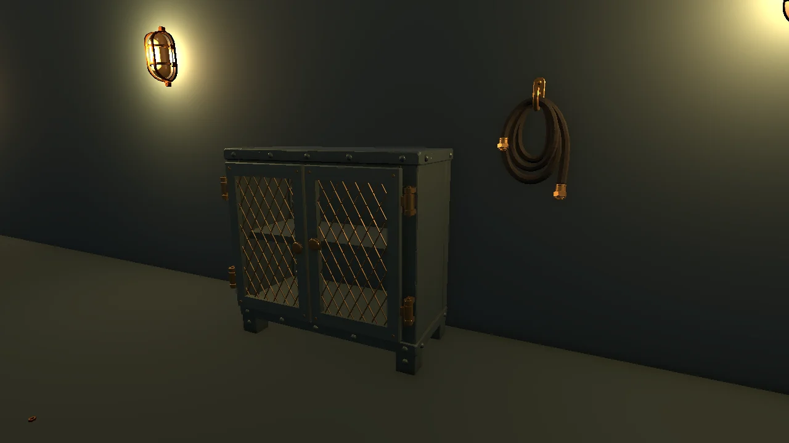

✦
CUBE ESCAPE
홈
캐릭터
방 아트
미니게임
오브젝트
Cube Escape
캐릭터
↗
방 시안 15종
↗
미니게임 규칙
↗
오브젝트
↗
방 시안
컨셉아트 · 게임 미적용
사슬 부유섬
캐릭터 모션
모션 검토 후보
착석
전환 약 0.27초 · 검토 후보
본편 의자 연동 전
Unity 화면

Unity Play · 11/15 14:05
압력실
부분 적용 · 잡기·서랍 동작 미구현
Unity Play · 11-15 16:13
분실물실
부분 적용 · E 집기·배달 확인 · 전체 방 미완성
 컨셉아트 · 게임 미적용사슬 부유섬
컨셉아트 · 게임 미적용사슬 부유섬 Unity Play · 11-15 16:13분실물실부분 적용 · E 집기·배달 확인 · 전체 방 미완성
Unity Play · 11-15 16:13분실물실부분 적용 · E 집기·배달 확인 · 전체 방 미완성